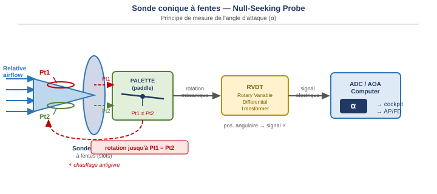
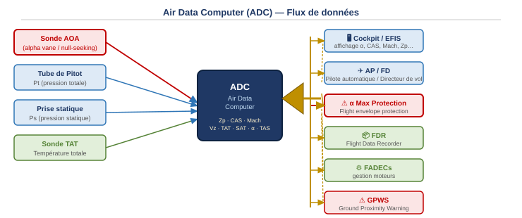
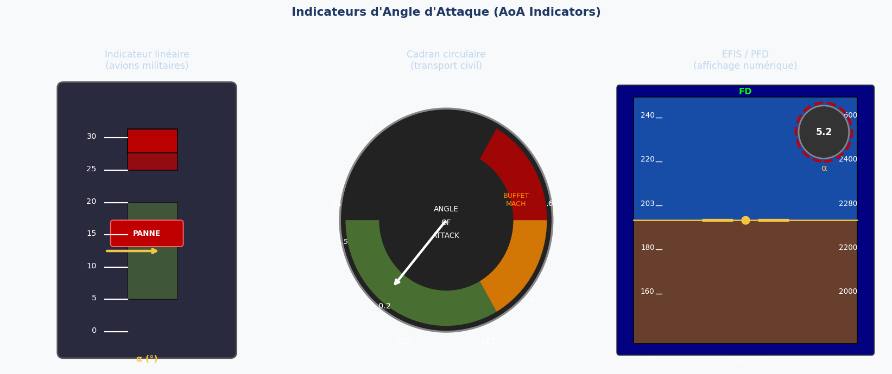

1. Définition de l'angle d'attaque
L'angle d'attaque (AoA, ou angle of attack, ou angle alpha, ou incidence aérodynamique) est l'angle formé entre la corde de l'aile et la direction de l'écoulement relatif (relative airflow). Il se note α (alpha).

Il est fondamental de distinguer l'angle d'attaque de deux autres angles souvent confondus :
- L'angle d'assiette (pitch angle) : angle entre l'axe longitudinal de l'avion et l'horizon — c'est ce qu'affiche l'horizon artificiel.
- L'angle de trajectoire (flight path angle) : angle entre le vecteur vitesse et l'horizon.
Angle d'assiette = α + angle de trajectoire.
Un avion peut piquer avec une forte assiette cabré et avoir un grand α si la trajectoire est encore plus cabrée — et vice versa.
2. Capteurs de mesure de l'angle d'attaque
2.1 Capteur à palette (Paddle Sensor)
Le capteur à palette est la forme la plus simple d'indicateur d'AoA. Il est utilisé sur les avions légers comme avertisseur de décrochage (stall warning). Il ne mesure pas l'angle précisément — il déclenche une alerte binaire (sonore ou lumineuse) dès que l'AoA devient anormal.
Le principe : une petite palette (paddle) ou languette (switch tab) est fixée sur le bord d'attaque de l'aile. En vol normal, le point de stagnation (stagnation point) se trouve en dessous de la palette qui reste abaissée. Lorsque l'AoA augmente vers le décrochage, le point de stagnation remonte et l'écoulement repousse la palette vers le haut, fermant le circuit d'alerte.

2.2 Girouette d'incidence (Vane Detector / Alpha Vane)
Aussi appelée floating vane sensor (capteur à girouette flottante) ou alpha vane. C'est le capteur le plus répandu sur les avions de transport. La girouette est libre de pivoter dans le vent et s'aligne automatiquement avec l'écoulement relatif.
Quand l'angle d'attaque change, la girouette tourne. Cette rotation est transmise à un synchro transmitter (transformateur de position angulaire) qui envoie un signal électrique proportionnel à l'angle vers l'indicateur dans le cockpit ou vers l'ADC.

Sur un Airbus A320, on trouve deux types de girouettes sur le fuselage avant :
- La girouette normale (normal vane) — position standard
- La girouette de secours (alternate vane) — en cas de panne de la principale

2.3 Sonde conique à fentes — Null-Seeking Probe
La sonde conique à fentes (conical slotted probe) est un système de mesure plus précis, utilisé sur les avions de transport modernes. Aussi appelée null-seeking probe (sonde à recherche du zéro) car elle pivote activement jusqu'à un état d'équilibre.
Principe de fonctionnement :
- La sonde conique s'étend dans l'écoulement. Elle comporte deux fentes (slots) disposées symétriquement, qui mesurent deux pressions totales Pt1 (fente supérieure) et Pt2 (fente inférieure).
- Ces pressions sont envoyées de chaque côté d'une palette mobile (movable paddle). Quand l'AoA change, Pt1 ≠ Pt2 — la palette se déséquilibre.
- Le déséquilibre provoque une rotation mécanique de la sonde jusqu'à ce que Pt1 = Pt2 (état "null" = zéro de différentiel).
- La position angulaire résultante est convertie en signal électrique par un RVDT (Rotary Variable Differential Transformer — transformateur différentiel rotatif à variation), qui envoie la valeur d'α à l'ordinateur de données air (ADC).

La protection antigivrage est assurée par chauffage électrique. La null-seeking probe est plus précise que l'alpha vane car elle mesure directement une différence de pression plutôt qu'un déplacement mécanique.
3. Systèmes utilisant l'angle d'attaque
3.1 Ordinateur de données air (ADC — Air Data Computer)
L'ADC reçoit les données des capteurs (sonde AOA, Pitot, prise statique, sonde TAT) et calcule l'ensemble des paramètres de vol :

Les paramètres calculés par l'ADC à partir des capteurs incluent : Zp (altitude pression), CAS (vitesse indiquée), Mach, Vz (vitesse verticale), TAT (température totale), SAT (température statique), α (angle d'attaque) et TAS (vraie vitesse air). Ces données sont distribuées à :
- Cockpit / EFIS — affichage direct pour l'équipage
- AP / FD — pilote automatique et directeur de vol
- α Max Protection — protection d'enveloppe de vol (Flight Envelope Protection)
- FDR (Flight Data Recorder, boîte noire) — enregistrement
- FADECs (Full Authority Digital Engine Control) — gestion moteurs
- GPWS (Ground Proximity Warning System) — avertissement de proximité sol
3.2 Système d'avertissement de décrochage (Stall Warning)
Le module d'avertissement de décrochage (Stall Warning Module) reçoit plusieurs paramètres d'entrée et peut générer plusieurs types d'alertes :

Entrées (inputs) :
- Capteur d'angle d'attaque (AOA sensor) — entrée principale, mise en évidence en rouge
- Position des volets (flap position) — car le Vmca et l'α max varient avec les volets
- Position des becs (slat position)
- Vitesse anémométrique depuis l'ADC (airspeed)
- Poussée (thrust)
- Microswitch de train (landing gear micro switch) — inhibe l'alerte au sol
Sorties (outputs) :
- Stick-shaker motor (vibreur de manche) — vibration physique du manche, alerte principale
- Master Warning lights (voyants d'alarme principale)
- Synthetic voice "STALL" (voix synthétique)
- Aural warning (avertissement sonore)
- AoA indicator (indicateur d'angle d'attaque dans le cockpit)
- EFIS / Symbol generator — affichage sur l'écran PFD
3.3 Systèmes de protection d'enveloppe de vol
La protection haute incidence (high angle of attack protection) est une protection aérodynamique qui utilise l'AoA comme entrée principale. Sur les Airbus fly-by-wire (A320 et suivants), cette protection empêche le système de commandes de vol de dépasser l'α max — le pilote automatique ou le pilote lui-même ne peut pas commander un angle d'attaque supérieur au maximum autorisé. La limite est appliquée en temps réel par les calculateurs de commandes de vol.
4. Indicateurs d'angle d'attaque
L'angle d'attaque peut être affiché de trois façons différentes selon le type d'aéronef :

L'indicateur linéaire vertical est typiquement utilisé sur les avions militaires. Il affiche l'angle en degrés sur une graduation verticale, avec des zones colorées (vert = normal, rouge = décrochage). Un voyant "PANNE" signale la défaillance du capteur.
L'indicateur circulaire (cadran type "Angle of Attack / Buffet Mach") est utilisé sur certains avions de transport. Il affiche à la fois l'angle d'attaque (côté gauche, en unités normalisées par rapport à Vs) et le Mach de buffet (buffet Mach) côté droit. Des secteurs colorés indiquent les zones normale (vert), approche buffet (orange) et décrochage/buffet (rouge).
L'affichage EFIS / PFD représente l'angle d'attaque sous forme d'une valeur numérique dans un petit cercle, généralement situé en haut à droite du PFD. Il peut être mis en surbrillance (rouge) lorsque la valeur approche des limites.
5. Indications incorrectes — Pannes et conséquences
5.1 Sonde bloquée en vol — scénario de panne
Une panne typique survient lorsque la sonde AoA se bloque (givrage, obstruction physique) à une valeur fixe. Le scénario le plus dangereux se déroule comme suit :
- L'avion décélère (réduction de vitesse). Le pilote automatique (AP), pour maintenir la trajectoire, doit normalement augmenter l'incidence.
- La sonde bloquée ne détecte aucun changement d'incidence — elle continue d'afficher une valeur figée.
- L'AP, croyant que l'incidence est encore faible, continue de commander une augmentation de l'assiette à cabrer (pitch up), aggravant la situation.
- L'avion peut entrer en décrochage sans qu'aucune alarme stall ne se déclenche (car le stall warning utilise la même sonde défaillante).
5.2 Interaction avec la protection d'enveloppe
Sur les avions équipés d'une protection d'enveloppe de vol (flight domain protection), une indication d'AoA excessivement élevée (même si elle est erronée) peut déclencher la protection haute incidence. Le système commande alors un braquage automatique de profondeur à cabrer-bas (nose-down trim) — progressif et difficile à contrôler si le pilote n'intervient pas rapidement.
5.3 Procédure en cas d'indication incorrecte
Quelle que soit la configuration, en cas d'indication AoA incorrecte, la procédure est :
Ce cas rappelle l'accident du vol Air France 447 (2009), où la perte des données anémométriques (Pitot gelés) a conduit à une désorientation de l'équipage et à une perte de contrôle. La gestion des pannes de capteurs atmosphériques (Pitot, AoA) fait partie des priorités de la formation ATPL.